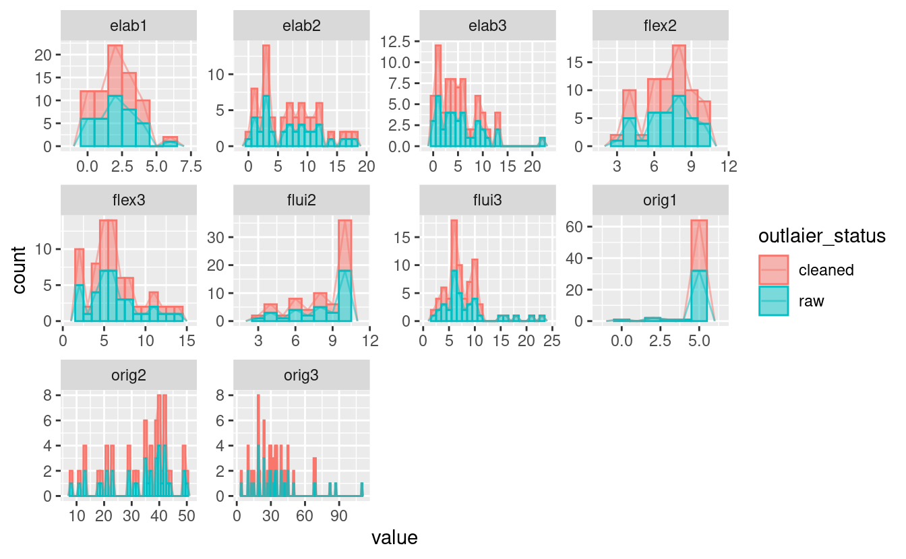
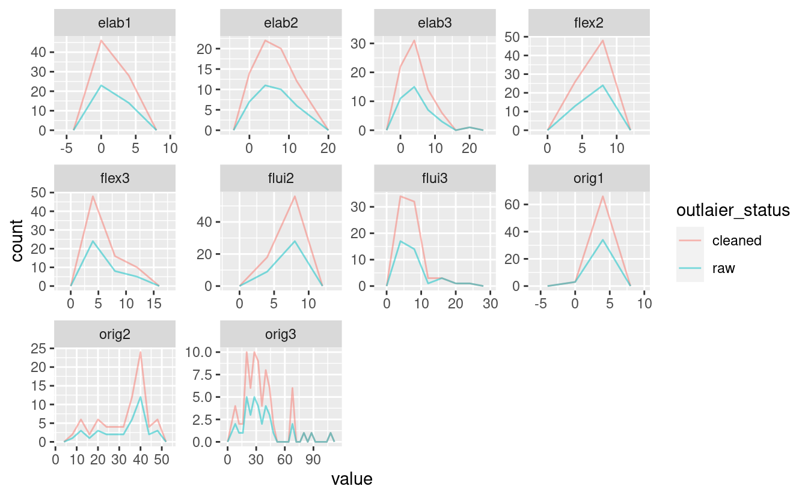

THE TOTAL WORD COUNT IS: 17 WORDS. Furter info ...: 1 min read Torrance Histogramas y Frecuencias 2022-09-06 TORRANCE Histogrames Shows raw and oulaiers-cleaned datasets frequency distribution, for each variable Notas Cleaning changes the distribution 